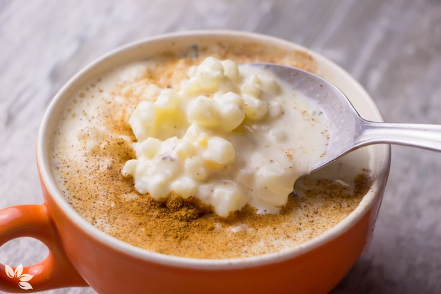

O Ventura é um comediante e ator, uma palavra que o define é carisma, e por isso eu gostaria muito de dividir uma canjica com ele. Além da parte em que ele superou as dificuldades, a história dele inclui um exemplo de leveza ao levar a vida e os problemas, alguém que encara a vida com a cabeça erguida e um sorriso no rosto. Depois da canjica a gente com certeza ia tirar uma foto na pose de quebrada !
| Ingredientes | Quantidade |
|---|---|
| canjica | 500g |
| leite integral | 1 l |
| leite condensado | 1 lata |
| creme de leite | 1 caixinha |
| leite de coco | 1 vidro |
| açúcar | 2 xíc. de chá |
| sal | 1 pitada |
| coco ralado | 1 pct. 50 g |
Passo 1
Deixar a canjica de molho de um dia para o outro ou colocar na água quente por 20 minutos, com a água cobrindo a canjica.
Passo 2
Cozinhar a canjica na água por 35 minutos aproximadamente ou até ficar macia.
Passo 3
Depois de cozida acrescente o leite aos poucos, o açúcar, o leite condensado, o leite de coco.
Passo 4
Deixe engrossar o caldo, coloque uma pitada de sal, o coco ralado e, por último, o creme de leite.
Passo 5
Não esqueça de mexer sempre a canjica para não grudar no fundo.
Passo 6
Bom Apetite!
